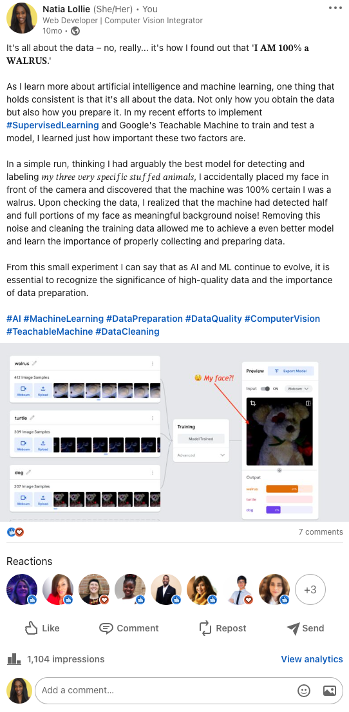

From Code to Community
There is a secret sauce that makes up every passionate tech individual, and bridging that tech gap
is like unearthing
hidden gems in a digital treasure hunt – and trust me, as someone who once stumbled upon the
revelation that
'𝐈 𝐀𝐌 𝟏𝟎𝟎% 𝐚 𝐖𝐀𝐋𝐑𝐔𝐒'

I can attest how these digital footprints, like hidden gems, unveil the
essence of who an individual is and how they can excel at what they do best. At the core of my being, helping others
has always been apart of my journey, spanning from my time as an event planner for The Multicultural Student Services to
my roles as a web developer and instructor specialist for UX/UI and Full-Stack coding boot camps.
Along the way,
Through these diverse experiences, I've witnessed firsthand the transformative power that support, enthusiasm, and knowledge sharing can provide. My mission as a developer advocate is an intersection of learning, community building, and technological innovation.
We used cycleGANs (Cycle-Consistent Generative Adversarial Network) and a diverse dataset of 50 faces that featured a wide range of skin tones to develop a process for creating filters that seamlessly enhances the user’s appearance in real time without diminishing performance across skin tones.
Individual recognition and achievement recieved on Samsung's global and USA newsrooms for my work within their A.I. and M.L. campus.
View on Social Media